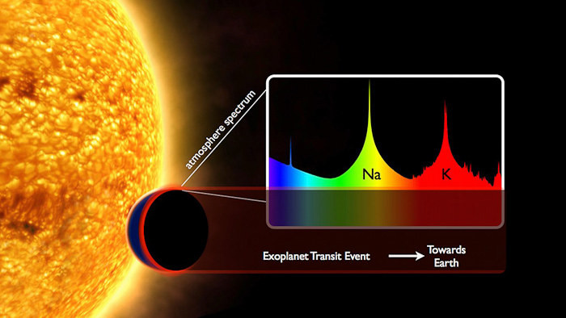
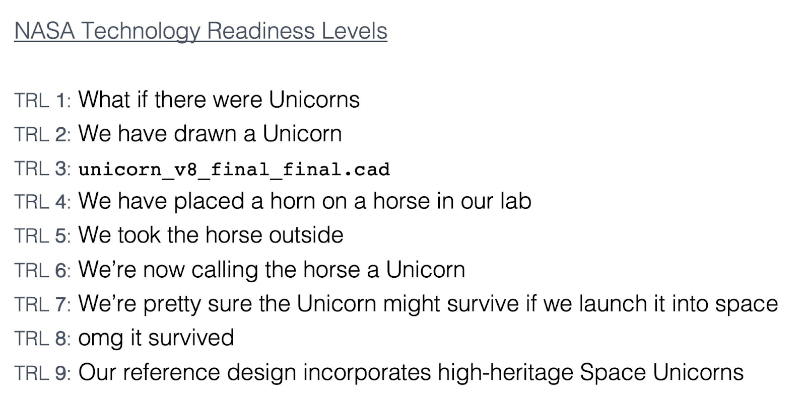

The Beginnings of Pandora
June 9th 2022 Author: Briley Lewis
We present an interview from Pandora Archive Scientist Jessie Christiansen with Deputy Project Scientist Tom Barclay and science team member Josh Schlieder
Welcome to the first blog post of the Pandora mission! In this series of posts, we'll be telling you the story of the mission from its conception through development, and all the way through launch and the first science results. Our goal is to record the journey of Pandora, while demystifying the process and effort of designing a NASA mission for early career scientists, and showcasing our amazing science team. Thanks for reading, and feel free to direct any questions to us on twitter, @briles_34 or @aussiastronomer!

Astronomers have their eye on exoplanets --- and an upcoming mission, known as Pandora, would help provide them with a clearer view. Right now, stars' active, changing surfaces are one of the biggest challenges for observing exoplanet atmospheres. Pandora is a small satellite mission that will observe exoplanets as they transit in front of their host stars, looking in multiple colors to help disentangle the effects of the star from the information about the exoplanet's atmosphere. As part of NASA's Pioneers program, Pandora is currently under development and is looking to launch in the mid-2020s.
In this first installment, we present an interview from Pandora Archive Scientist Jessie Christiansen with Deputy Project Scientist Tom Barclay and science team member Josh Schlieder, discussing how the mission got started in the first place.
| Archive Scientist Jessie Christiansen | Deputy Project Scientist Tom Barclay | science team member Josh Schlieder |
|---|---|---|
 |
 |
Today's interviewer and guests. Left to Right: Jessie Christiansen, Tom Barclay, and Josh Schleider.
Jessie: So, for posterity, this is the first interview in our series of Pandora pedagogical, behind-the-scenes blog posts, where we're going to interview all of the members of the Pandora team and find out how they got involved and how the mission came to be. This is interview one with Tom Barclay and Joshua Schlieder!
Tom: Hello, my name is Tom Barclay. I'm based at NASA Goddard. I work on Pandora amongst other missions, but my role on Pandora is that I'm a scientist in charge of instrument and observatory design. And I work with engineers to make sure that Pandora will meet the requirements that the scientists need. I call myself a deputy project scientist for Pandora.
Josh: My name is Josh Schlieder. I'm an astrophysicist at NASA Goddard. I work on several missions, Pandora being one of them. I also work on the Nancy Grace Roman Space Telescope, and I work on the Neil Gehrels Swift Observatory. Officially, I'm a member of the Pandora science team, and I help with things like target selection, and thinking about how we observe these targets in a way to achieve our science. And behind the scenes, also sort of, you know, just contributing to technical discussions.
Jessie: Can you tell us about the first discussions that ended up leading to the idea for Pandora? Was it a science question you were thinking about? Or was there a technological development that made something new and interesting? What was the initial spark that started things?
Tom: I guess to step back, both of us and Elisa Quintana [Pandora Principal Investigator] and Knicole Colon [Pandora Project Scientist] joined Goddard at almost precisely the same time, which was fabulous...there was a lot of new energy in the place. The primary purpose that Goddard exists is that Goddard does flight projects, so when you start there, people are like: so do you have any mission ideas? I don't think any of us had ever worked anywhere like that, so coming up with our own flight project was something that wasn't realistic to us. But we were just kind of bouncing ideas off each other. And obviously, I think what we wanted to do is something exoplanet related. But we weren't exactly sure what that was.
We thought about ideas of which things you can do uniquely from space: you can measure your long observing times, you can measure much more precisely, you can measure in the infrared, you can measure in the ultraviolet. And so thinking of ideas like these was kind of what started our conversations...I think Pandora specifically happened because Josh was like, "Hey, stellar activity could be a real problem for exoplanet science for NASA because we're putting a lot of science eggs into the basket of transmission spectroscopy with JWST. As we move forward with that, are the results trustworthy? And is there something we could do, anything that could help with this experiment?" To look at transmission spectra in the infrared, and do it precisely, you need to be in space --- so that's where the idea was initially formulated. It was a lot of hallway conversations that led to it.

Jessie: Yeah, that's really interesting that the whole thing started with the question: if you could do something in space, what would you do? I think that's probably not an opportunity that a lot of people genuinely get handed regularly --- especially early career people who might be interested in these interviews. Josh, did you have anything you wanted to add?
Josh: I think I think Tom covered all of it pretty well, and with a lot of detail and things I actually can't remember. But yeah, in general, I can add that he and I and Elisa and Knicole all coming together around the same time and having mutual interest in exoplanets, and particularly transiting exoplanets, led to us sort of realizing that there was a real opportunity to get together and think about what kind of mission we can do to solve some outstanding problems. I went into Elisa's office with his [Ben Rackham's] paper, and I was like, "Have you seen this? Have you read this?" And she was like, "No, I mean, I've heard of it. But I haven't really looked into it." I remember we started drawing stuff on the whiteboard and talking through it and being like, this is a problem, like this is going to be a big deal...we decided, "Oh, well, maybe this is a science topic we could pursue through this opportunity." And exoplanet science was really what brought us together and got us brainstorming these kinds of things.
Jessie: From there, how did you get the ball rolling on actually creating the mission? What were your next steps between taking this problem that you had identified and sitting down with someone and saying, "Hey, let's make this happen"?
Tom: Relatively quickly, we, you know, we hit upon the idea of kind of simultaneous observations of multiple colors. Because no one else is doing that. And it's one way that we could tackle this issue [of stellar activity in transmission spectra] and collect data no one else was collecting.
Josh: We had a conversation with someone on the mission development side of things at NASA, and we pitched this idea and what the science was. What we thought we needed to do, like Tom said, is to take both blue and red observations of a star while the planet is transiting. In the blue, we get what the star is doing, and then the red sort of tells us what the planet is doing. And if you have both at the same time, then you can disentangle them, and you've sort of solved this contamination problem --- because you've got a record of each individual thing at the same time, and you can pull apart the pieces.
The way the missions happen within NASA --- for what we would call a small or a modest sized mission --- is a competed call, where you have to apply and write a proposal. They [the mission development experts] wanted to know things like, "What proposal call are you going to propose to? Which calls are coming up in the future? Could you fit this mission concept into that type of call and that type of cost cap?" All those questions were thrown at us, and we were like, "It's just an idea!" After we got that feedback from people who had way more experience than we did, we had to really sit down and talk about what we needed --- what size of telescope, what kinds of instrumentation, what kind of orbit, how many targets and what targets, and what length of mission operation lifetime to really achieve the science.
It's a very, very difficult process and it requires creative thinking and a lot of dedicated hard work. I guess we didn't get discouraged by the harsh reality of how this process goes upfront, and we just kept pushing on it. Eventually, in our discussions, we came up with a baseline idea, and Elisa Quintana came forward to lead the whole thing, then we went from there.
Tom: I still have one of the first pictures we drew--- our first idea of what our instrument would look like. It was just a schematic of a mirror, with light coming in, hitting your mirror and then hitting a dichroic [a crystal that splits light into two colors] and going up to two detectors.

Jessie: Yeah, that's all it really is. Right?
Tom: That's basically what we're building. I mean, obviously many, many hundreds of hours of engineering work went into taking that piece of paper and turning it into something real. But that basic idea was kind of the spark. After me and Joshua were bouncing around the first ideas, we decided to write an internal proposal. Goddard has this internal proposal call, called an IRAD. It's where you ask for some funds to do something --- they're normally very limited, but they're enough to kickstart a project. We asked for money for some engineering development time to work with engineers to flesh out our ideas into a real mission concept, and that got people interested.
Josh: It's actually a really sort of incredible process when you think about it, because we came to Goddard in early 2017, sort of talking amongst ourselves thinking about a science question we can answer. We weren't discouraged by the difficult reality of what we were up against. And maybe that was our naivete. That was helping us because we didn't really know what we were up against. We just sort of dove in, taking opportunities as they came.
Going from a sketch on a whiteboard of a mirror to actually having a CAD model of a telescope and an instrument and thinking about what components you would select, and how would they fit together --- it all happened very fast, in months. If you have a good idea, and you get some momentum behind it, it can quickly go really far.
Jessie: It seems like the fact that you guys had access to this "kickstarter" funding was really pivotal. For people out there who might be reading these posts and thinking they've got an idea, and they're really excited - what's the way forward for them? Would you say come come chat to people at a NASA center?
Tom: We did manage to get some internal funds that gave us the kickstart. We went through NASA Goddard's selection process of what missions they want to push forward, at the same time the Explorers mission call was happening. Explorers is a call for proposals every two years, and they solicit a range of mission sizes, and sometimes small missions of opportunity. We went through that process as a small mission of opportunity. In the government ranking, I think we were ranked 2nd --- which means they officially approved us to move forward, but they didn't actually have any funding for us. A huge credit should go to Elisa for pushing this forward. She led the other proposals and the IRAD, and even without any money or engineering support, she was like, "We're not done, we're going to find a way to push this forward." She went on a mission to find someone else to pay for it, and managed to get a contract with Lawrence Livermore National Lab. They said they had a telescope for us, but it's bigger than we were expecting --- 45 centimeters instead of 20. We were like, we can deal with the bigger telescope!

Jessie: So this is four times the original collecting area? How much has the idea for the mission changed from your original discussions to what ended up being proposed for and selected?
Josh: Actually, the bigger telescope opened up an opportunity for us. When we upgraded to that larger collecting area, we actually gained access to more targets and had more choice of what we could actually do in terms of a science program.
Tom: I mean, the biggest change was, we thought we could cram everything into a 12U CubeSat.
Josh: Yeah, when we upgraded, we went from the idea of having a relatively large CubeSat to having a relatively small full-payload-plus-bus kind of combination, which is what we typically see for a larger space telescope. I would say, the design that we ended up with for Pandora when Elisa built a partnership with Lawrence Livermore is more akin to what you would have proposed as a small Explorer-class mission 10 years ago. Now, it can fit into this small mission of opportunity size class because of technological advancements and the availability of components and, you know, progress marching forward.
Jessie: So, once you partnered with Lawrence Livermore, did you still propose to the small mission of opportunity program?
Tom: Yeah, so we had to write this proposal extremely quickly. Long story short, that didn't get accepted, but we got pretty good feedback. We looked for our next opportunity, which ended up being the new Pioneers mission call. We were like --- can we take this $35 million mission and squeeze it into a $20 million cost box? It might seem totally insane, but there's also a big difference in risk management in these two mission types. The small mission of opportunity was a high fidelity, high risk management project, but the Pioneers required less so we could drop a lot of overhead in terms of management and risk.
Jessie: Ah, so you didn't have to have a, you know, high heritage space unicorn ready to go. You could have a horse with a horn on.

Tom: Yeah, exactly. We had to drop a few things here and there. But it's basically the same mission we proposed.
Jessie: Ah, well, that's actually the next question on my list. Were there any hard decisions that had to be made? Are there any that you regret deeply? What are you sad that you don't have?
Tom: What do you think, Josh?
Josh: I don't know. I was hoping you could have something insightful to say for this question, because I don't remember anything that we necessarily were sad about giving up.
Jessie: (jokingly) One of the things you gave up was a paid archive service, because now I'm just doing it for free.
Josh: Actually, one of the unfortunate things is that the hardware costs what it costs, and you have to have engineering support to build and test the hardware before you fly it. And so if you're looking at a cost crunch, then what ends up taking a hit is often the time of people on the science side. And that's really unfortunate, but it's the reality that I think a lot of NASA missions face when they're in development.
Jessie: Yeah, Pandora is definitely not the first mission to experience this.
Tom: I was gonna say, Pandora has had one kind of interesting quirk of what we're able to do there, though, because the Pioneers call very explicitly talks about training the next generation of spaceflight leaders. So it focuses on earlier career folks. The fact that we're allowed to take more risks, and we're looking at early career people, means that we could put people in positions in the mission that in a different class mission, people would be surprised --- like, okay, does this person really have the experience to do that job? Whereas in this, we can say, "No, they are the right person to do this job for this mission! And if they don't have the experience, they sure as hell will get it now."
Jessie: Oh, that's interesting. Okay, now that you are deep in the work of the mission, are you glad that you had the idea for Pandora?
Josh: Yeah, enthusiastically yes, I would say. It's what we're here for, to be honest. It's why we want to work in the place where we work, and why we want to do the things we do --- to, you know, have these ideas and work together with an awesome team of people. This is sort of what we signed up to do. And here we are doing it. It's really a thrill to think that something that we came up with the idea for is now, you know, being supported to be built and flown to go to space and do science.
Tom: Right? Yeah, it's the coolest thing about being able to try and build something and put it in space, it's the coolest thing you can imagine.
Jessie: What advice do you have for early career astronomers and planetary scientists who have their own ideas for mission?
Josh: Talk to people that are your colleagues and that have different experiences. Sort of socialize the idea and see what the feedback is, and take the feedback seriously. I mean, there might be somebody who says,"Oh, that's a terrible idea, I would never, I would never support such a thing." But that is just one opinion. And people have lots of those. And so, you know, I would say, embrace your ideas.
Tom: I exactly agree with Josh, that you need a level of confidence in your idea that initial setbacks aren't going to push you back. But your first idea probably isn't a very good one, or at least your initial way of solving it. Certainly, everything that me and Josh, at least, have tried to do, the initial ideas have been fatally flawed, but there are ways of kind of bouncing them around moving in certain directions, so that you can come up with something feasible.
Jessie: Right? Even if your first idea doesn't work, the fact that you're having ideas is already exciting, right? Like coming up with something is already cool --- like well done, you, and just because that idea didn't work doesn't mean you won't have other ideas.
Tom: The thing that made Pandora successful is that the science question was important and interesting and got people's attention right away. And I think successful missions all have that fundamental foundation, that the science idea is solid.
Josh: I would add, something that I've certainly learned along this path is you absolutely cannot do this on your own. You have to build a team. And, you know, building that team is part of the struggle but also part of the fun in doing this.
Jessie: All right, last question. What are you most excited about for the next phases of the mission?
Tom: I mean, I've been theoretically designing what this instrument is going to be and what it's going to look like and coming up with what the data is going to be like. And the next phase is we're going to start with buying components, we're putting them together, we're testing things.
Josh: You know, I've been just infatuated with rocket launches. And so I'm really looking forward to the day when Pandora is built and tested and put together and it's attached to some rocket and where we're just sitting there counting down and waiting to see that happen.
About the Author
 Briley Lewis is a freelance science writer and a graduate student studying astronomy and astrophysics at the University of California, Los Angeles. Follow her on Twitter @briles_34
Briley Lewis is a freelance science writer and a graduate student studying astronomy and astrophysics at the University of California, Los Angeles. Follow her on Twitter @briles_34